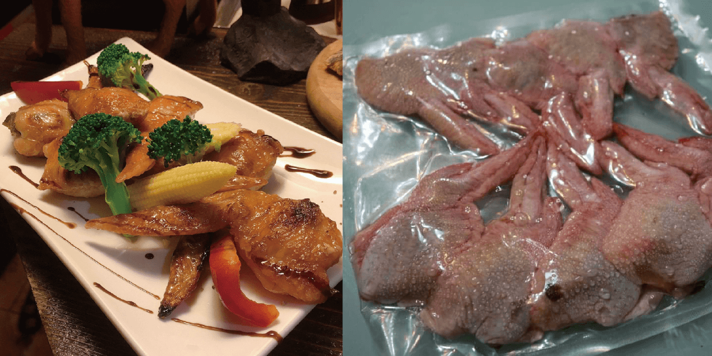

- 主食系列 -
我是肉食主義
料理方式：老闆德國特製料理，道地德國菜，已經由調味
料理方式：加熱後即可食用
（腿排）大蒜、白酒、胡椒、鹽巴、香草 醃製而成
料理方式：經由醃製過，煎、烤， 料理過後即可食用
烤雞排：建議溫度 180 度約 20 分鐘（家用烤箱）

已去骨，放入剝皮辣椒 (微辣)
料理方式：煎、烤、氣炸鍋熟了即可食用
烤雞翅：建議溫度 180 度約 20～25 分鐘（家用烤箱）
選自紐西蘭小羔羊的羊肩，本質腥羶味幾乎沒有之外，由迷迭香、橄欖油、鹽等調味醃製
料理方式：煎、烤，料理過後即可食用
- 先大火煎正反面之後🔥
- 進烤箱 200 度 5分鐘⏰
建議熟度 8~9 分熟，全熟會太老
老闆德國特製料理，道地德國菜， 已經由調味
料理方式：烤、蒸、連真空包隔水加熱 即可食用
三種方式：
- 微波爐加熱 即可食用
- 煮一鍋熱水，連同真空包裝一起放入熱水加熱，之後在拆包裝，即可食用
- 拆封後放入烤箱，烤熱即可食用